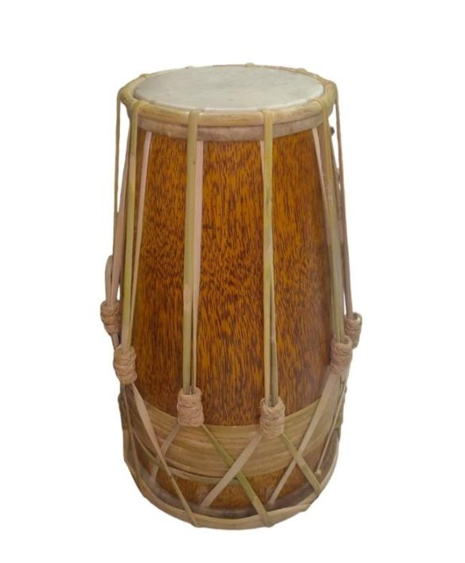
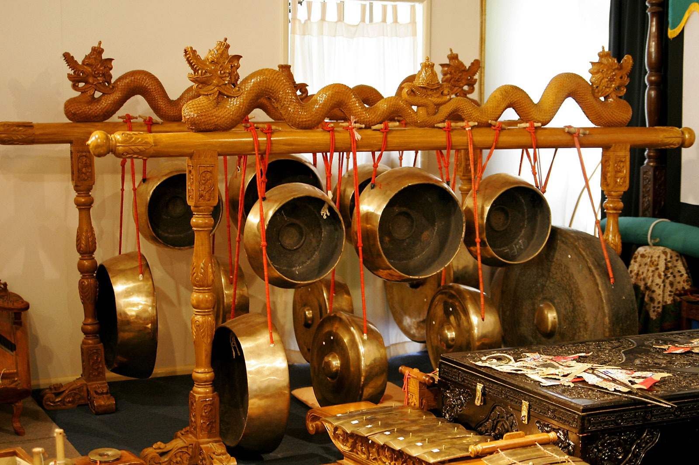

📜 Sejarah
Kendang Kempul adalah genre musik pop-etnik khas masyarakat Osing, Banyuwangi, yang memadukan unsur musik tradisional setempat dengan instrumen modern. Nama kesenian ini diambil dari dua alat musik perkusi utamanya, yaitu kendang (kendang) dan kempul (gong kecil). Perpaduan ini menghasilkan irama yang dinamis, rancak, dan sarat akan identitas budaya Blambangan.
Kendang Kempul bukan sekadar musik tradisi biasa, ia adalah simbol resiliensi budaya masyarakat Osing di Banyuwangi. Musik ini lahir sekitar tahun 1970-an. Cikal bakalnya berakar dari kesenian Gandrung, musik Angklung Caruk, dan Gending Jawa.
Sosok maestro lokal seperti Sumitro Hadi dan Muhafidh kerap disebut sebagai para jenius di balik lahirnya genre ini. Mereka bereksperimen menggabungkan alat musik tradisional dengan instrumen modern. Pada awalnya, musik ini murni menggunakan instrumen perkusi tradisional.
Namun memasuki era 80 hingga 90-an, kendang kempul mulai berakulturasi dengan masuknya instrumen modern seperti gitar elektrik, keyboard, dan bass, menciptakan genre baru yang kini dikenal sebagai Kendang Kempul Banyuwangian.
💭 Makna Filosofis
Di balik ritme rancaknya, instrumen utama Kendang Kempul menyimpan filosofi mendalam tentang kehidupan:
🎵 Harmoni dalam Keberagaman
Kendang berfungsi sebagai pengatur tempo (pemimpin), sedangkan kempul berfungsi sebagai penegas ketukan (penyeimbang). Kolaborasi keduanya melambangkan pentingnya keharmonisan, saling menghormati, dan gotong royong dalam kehidupan sosial masyarakat Osing.
💫 Ekspresi Jiwa
Karakter suaranya yang dinamis, tegas, namun tetap menyentuh hati mencerminkan karakter orang Osing: terbuka, jujur, pekerja keras, namun tetap memiliki kelembutan rasa.
🌏 Akulturasi Budaya
Kendang Kempul menjadi simbol bahwa tradisi dan modernitas bisa berjalan beriringan tanpa harus saling menghilangkan. Ini mencerminkan semangat masyarakat Osing yang adaptif namun tetap berakar pada budaya leluhur.
🎭 Prosesi Pementasan
Dalam praktiknya, Kendang Kempul dipentaskan dalam berbagai konteks budaya melalui prosesi yang terstruktur:
1. Persiapan dan Ritual (Sajen)
Sebelum pementasan besar (seperti hajatan pernikahan atau festival adat), biasanya dilakukan ritual kecil atau penyediaan sesaji (sajen). Ini adalah bentuk penghormatan kepada leluhur dan permohonan agar acara berjalan lancar tanpa kendala teknis maupun spiritual.
2. Susunan Komposisi Instrumen
Pementasan ini melibatkan ansambel yang sangat spesifik seperti:
- Inti Tradisional: Kendang, Kempul, Gong, dan Angklung
- Sentuhan Modern: Keyboard dan Gitar untuk memperkaya melodi
- Vokal: Dinyanyikan oleh penyanyi pria dan wanita yang saling berbalas pantun (disebut wangsalan)
3. Gending Pembuka (Overture)
Dimulai dengan tabuhan instrumental bertempo lambat untuk membangun atmosfer dan menyiapkan penonton memasuki suasana pertunjukan.
4. Inti Acara
Penyanyi mulai masuk membawakan lagu-lagu hits Kendang Kempul yang sarat akan pesan moral, romansa, atau kritik sosial. Ini adalah bagian yang paling ditunggu-tunggu penonton.
5. Interaksi Penonton
Di tengah acara, ritme akan semakin cepat, mengundang penonton untuk ikut menari bersama dalam suasana yang cair dan akrab. Inilah yang membuat Kendang Kempul sangat digemari masyarakat.
✨ Fakta Menarik
"Dua Dunia" yang Menyatu
Meskipun menggunakan gong (kempul) yang identik dengan mistis atau ritual sakral, Kendang Kempul justru sangat populer sebagai musik pop-etnik yang dipakai untuk bergoyang di acara-acara hajatan kampung.
Pelopor Pop Jawa Sebelum Era Koplo
Sebelum musik Dangdut Koplo atau Campursari sekondang sekarang, Kendang Kempul Banyuwangi sudah lebih dulu sukses mengawinkan unsur tradisional dengan musik modern secara masif di Jawa Timur.
Cengkok Vokal yang Unik
Penyanyi Kendang Kempul harus memiliki kemampuan cengkok khas Banyuwangian yang tinggi dan meliuk-liuk. Cengkok ini berbeda dengan cengkok dangdut biasa atau sinden Jawa standar—ia lebih bertenaga dan ekspresif.
Akulturasi Instrumen
Perpaduan kendang tradisional dengan gitar elektrik dan keyboard menjadikan Kendang Kempul sebagai salah satu genre musik paling unik di Indonesia.
Favorit Hajatan
Kendang Kempul menjadi musik wajib di berbagai acara hajatan, pernikahan, dan festival di Banyuwangi karena suasananya yang meriah dan menghibur.
📸 Galeri


